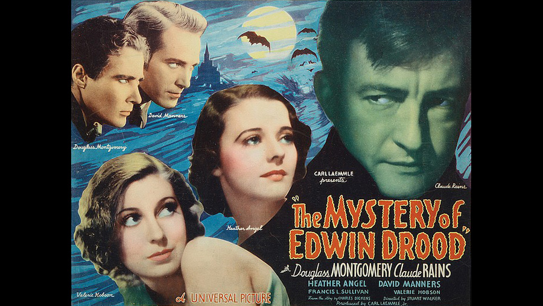

1935

CAST
John Jasper
-
Claude Rains
Reverend Septimus Crisparkle
-
Francis L. Sullivan
Hiram Grewgious
-
Walter Kingsford
Mrs Crisparkle
-
Louise Carter (uncredited)
Durdles
-
Forrester Harvey
Neville Landless
-
Douglass Montgomery
Edwin Drood
-
David Manners
Mayor Thomas Sapsea
-
E.E. Clive
Rosa Bud
-
Heather Angel
Helena Landless
-
Valerie Hobson
Princess Puffer
-
Zeffie Tilbury
Miss Twinkleton
-
Ethel Griffies
Deputy
-
George Ernest
CREATIVE TEAM
Director
-
Stuart Walker
Screenplay
-
Leopold Atlas
John L. Balderston
Bradley King
Gladys Unger
John L. Balderston
Bradley King
Gladys Unger
BACKGROUND
A 1935 American mystery-drama film directed by Stuart Walker and starring Claude Rains in the role of the villainous John Jasper. It is the third film adaptation and first sound film version of the unfinished novel. Filmed by Universal Pictures, it co-stars Douglass Montgomery and Valerie Hobson (the future Estella of David Lean's 1946 Great Expectations), and featured David Manners as Edwin Drood. Stuart Walker had previously directed a little-known 1934 film adaptation of Great Expectations. The film's script provides an ending to the original unfinished novel, solving the mystery of the fate of Edwin Drood.
It marks Claude Rains' only appearance in a Charles Dickens film.